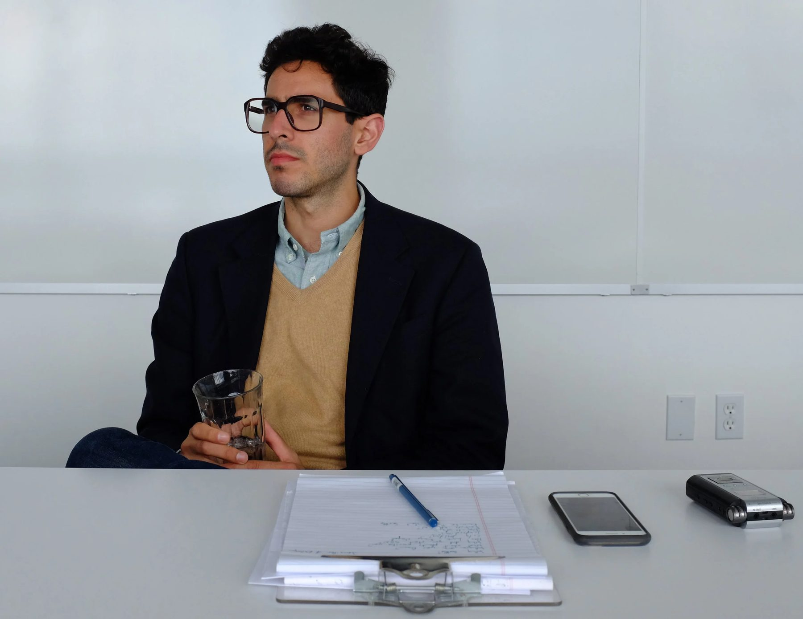

Creative Director · Health · New York
Many little stories tell the big picture.
Darian Momanaee is a creative director in health, known for using surprising scientific, medical and product insights to tell deeply emotional stories that move people. Almost 20 years of helping make clients famous, from mass-market electronics to rare-disease treatments.

Recognition
- Cannes Lions — Gold The Most Beautiful Sound2023
- Cannes Lions — Bronze The Most Beautiful Sound2023
- London International Awards — Grand LIA (Pharma & Medical); Gold, Creative Use of Data; Gold, Innovation; Gold, Music & Sound Design The Most Beautiful Sound2023
- Clio Health — Gold, Audio The Most Beautiful Sound2023
- Clio Health — Silver, Innovation The Most Beautiful Sound2023
- New York Festivals Health — Grand + Gold The Most Beautiful Sound2023
- D&AD — Wood Pencil, Pharma / Innovation The Most Beautiful Sound2024
- London International Awards — Gold, Direction; Gold, Stop-Frame Animation; Silver, Direct Film; Finalist, Sound Design The Steamboat Willie Story2024
- Clio Health — Gold, Design Craft: Animation; Bronze, Film Craft: Animation The Steamboat Willie Story2025
- The Webby Awards — Nominee Audi Library2019
Juror, Clio Health 2025 · New Blood Academy Team Coach, D&AD 2022
Some awards omitted for length.


Brands
MerckEli LillyPfizerJohnson & JohnsonASCOLGMercedes-BenzAudiPaciraYamaha
About
Writing, music & the science of moving people
In school, Darian studied music and literature (Vanderbilt University, The University of Michigan, Ann Arbor, The University of Texas at Austin) and recently won back-to-back Gold Clios for sound design (2023 for GREY, 2024 for Klick Health). He currently lives in Harlem, New York City.
More about DarianContact
momanaee@gmail.com